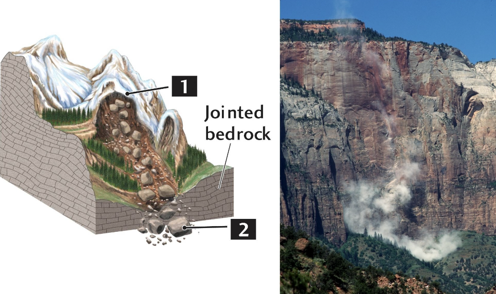

Stabilità dei Pendii
L’angolo di pendio determina la stabilità di un versante. Questo dipende da vari fattori.
1. Angolo di Riposo
Inclinazione massima che un materiale può mantenere senza scivolare.
Alcuni esempi di valori tipici:
| Materiale | Angolo di Riposo |
|---|---|
| Sabbia asciutta | 30-35° |
| Ghiaia | 35-40° |
| Argilla secca | 15-30° |
| Detriti rocciosi | 35-45° |
| Roccia fratturata | 25-35° |
Immagino un vassoio con della sabbia sopra, lo inclino, quando la sabbia inizia a cadere dal vassoio ho superato l’angolo di riposo
2. Coesione (c)
La forza di attrazione che mantiene unite le particelle di un dato materiale, anche in assenza di pressione. In geotecnica lo possiamo definire come la resistenza al taglio quando la tensione normale è zero.
Tipi di coesione:
- Coesione interna: incastro tra i cristalli o granuli
- Coesione apparente: esercitata dai menischi di acqua tra un granulo e l’altro (temporanea)
3. Presenza di Acqua
Quando la presenza di acqua aumenta, prima forma il massimo numero di menischi tra i granuli, quindi riempie gli spazi vuoti. Questo non crea ancora instabilità, anzi il materiale è stabile anche oltre l’angolo di riposo grazie alla coesione apparente.
Quando invece satura completamente tutte le porosità, il pendio diventa instabile anche sotto l’angolo di riposo per:
- Perdita menischi (annegamento)
- Aumento peso del materiale
- Pressione interstiziale che riduce l’attrito efficace
4. Peso del Materiale
Più materiale = maggiore pressione verso il basso = maggiore instabilità. È come se aggiungiamo libri su una pila già inclinata.
La Meccanica delle Rocce
Sui versanti abbiamo sempre due forze principali che agiscono:
- Gravità (azione): Peso (P) che spinge verso il basso
- Attrito del terreno (reazione): Forza di attrito che oppone resistenza
Terza legge di Newton: ad ogni azione corrisponde una reazione uguale e contraria, quindi possiamo dire che il pendio è stabile meccanicamente finché: Reazione ≥ Azione
Peso (P) si scompone in:
├── Componente normale (N = P × cos α) ⟂ al pendio
└── Componente tangenziale (T = P × sen α) ∥ al pendio
- N → comprime il terreno, aumenta attrito
- T → cerca di far scivolare il materiale
Come se ho un libro su un tavolo inclinato: una parte del peso “schiaccia” il libro sul tavolo (N), l’altra lo fa scivolare (T)
Criterio di Mohr-Coulomb
τ = c + σ × tan φ
Dove:
- τ (tau) = Resistenza al taglio massima
- c = Coesione del materiale
- σ (sigma) = Tensione normale efficace (pressione - pressione interstiziale)
- φ (phi) = Angolo di attrito interno del materiale
Condizione di stabilità: τ ≥ sforzo di taglio agente
Fattore di sicurezza (FS): FS = τ / sforzo di taglio
- FS > 1 → stabile
- FS = 1 → equilibrio limite
- FS < 1 → instabile
Note sui parametri:
- φ può riferirsi alle rocce intatte, all’attrito fra due lati di una frattura, o all’attrito del materiale che riempie la frattura
- Per le rocce pseudo-coerenti (tipo argille), φ varia con il contenuto d’acqua:
- Secca: si comporta come roccia coerente
- Umida: cala fino al limite di plasticità
- Satura: se superato il limite liquido diventa un fluido viscoso
Frane
Una frana è il movimento verso il basso di materiale roccioso, detritico o terroso. Questo movimento possiamo articolarlo in quattro fasi:
1. Cause Predisponenti
Sono le cause che rendono una massa rocciosa instabile. Queste possono essere naturali oppure artificiali (erosioni fluviali o marine, interventi umani come appesantimento del versante, o tagli per le strade).
-
Nelle Alpi la maggiore causa predisponente è la deglaciazione, che cambia drasticamente la pressione esercitata sui versanti.
- Per ricordare: come se stringessi un masso fra le mani, se allento la stretta la pressione sul masso diminuisce e alla fine scivolerà
-
Nelle zone collinari italiane il problema principale è la geologia sfavorevole: gli strati rocciosi sono inclinati come “scivoli naturali” (franapoggio //) invece che come “gradini stabili” (reggipoggio /)
Franapoggio: strati inclinati <45° nella stessa direzione del pendio ma con pendenza minore
Reggipoggio: strati inclinati in direzione opposta al pendio
2. Cause Scatenanti
Le cause che innescano la frana. Queste possono essere naturali o artificiali.
Naturali: forti piogge, disgelo, neve, maree, sismi
Artificiali: dighe, opere di drenaggio, riempimento di laghi
Spesso sono legate alla quantità di acqua. Ad esempio:
- Crolli o colamenti rapidi per fluidificazione: il motivo è la quantità di acqua caduta nelle ore precedenti
- Rocce poco permeabili (come argilla) o infiltrazioni profonde: conta più la durata e quantità della pioggia caduta nei mesi precedenti
Spesso le frane restano inattive anche per secoli, per poi riattivarsi in momenti di forte piovosità.
Altre cause scatenanti:
- Acqua da fusione neve: come se fosse pioggia di lunga durata
- Brusco aumento pendenza o alleggerimento al piede
- Aumento di peso del pendio
- Sismi
3. Traslazione
Movimento della massa rocciosa, che può variare dai millimetri al giorno ai metri al secondo. La traslazione crea sul versante la nicchia di frana.
Scala delle Velocità (Cruden-Varnes)
- Estremamente lenta: <16 mm/anno
- Molto lenta: 16 mm/anno - 1.6 m/anno
- Lenta: 1.6 m/anno - 13 m/mese
- Moderata: 13 m/mese - 1.8 m/ora
- Rapida: 1.8 m/ora - 3 m/min
- Molto rapida: >3 m/min
4. Arresto
La massa rocciosa si arresta quando incontra ostacoli o terreni poco inclinati. Oppure può continuare ma trasportata da altri agenti, come un fiume, onde, valanghe e infine si disperde.
Pericolosità, Vulnerabilità e Rischio
- Pericolosità geomorfologica: tendenza a manifestarsi di un evento geomorfologico, definita da frequenza e magnitudo del fenomeno
- Vulnerabilità territoriale: beni e persone esposti al pericolo dell’evento
- Rischio geomorfologico: Vulnerabilità territoriale × Pericolosità geomorfologica
Tipi Caratteristici di Frane
Crolli (Fall)
Hanno inizio con il distacco di materiale da pendio ripido, seguito da caduta libera di massi con salti, rimbalzi e rotolamento. Il movimento avviene anche per via aerea.
Il distacco avviene su una o più superfici di rottura, chiamate superfici di crollo, che coincidono con le discontinuità preesistenti della parete (fratture, giunti, stratificazione, etc.), dove la resistenza al taglio è minima.
Segni di instabilità e imminente crollo:
- Spostamento di un ammasso di roccia lungo una o più fratture
- Infiltrazione di acqua nelle fratture con aumento della pressione idraulica
- Disgregazione di cunei rocciosi che tengono fermi ammassi rocciosi
- Rotazione attorno al baricentro di grandi rocce, che causa il distacco dell’intero masso; questo fenomeno prende il nome di ribaltamento (toppling)
- Rigonfiamento dell’ammasso roccioso a causa della dilatazione delle fratture
- Colate di acqua persistenti dopo tanto tempo dalla fine delle piogge
- Presenza di blocchi o pietraie ai piedi della parete
Cause predisponenti:
- Disgelo del permafrost → allenta rocce disgregate ma cementate da ghiaccio
- Ritiro glaciale che allenta la pressione sui versanti
Cause scatenanti:
- Sismi o esplosioni
- Infiltrazione di acqua nelle fratture con aumento della pressione
- Crioclastismo
- Decompressione
Frana di crollo con corpo di frana a cono

Caduta Massi (Rock Fall)
Insieme di rimbalzi e rotolamenti su un piano inclinato con ostacoli. In genere:
- Distacco di rocce di piccole dimensioni
- Che urtano altre rocce instabili e ne causano il distacco
Situazioni che favoriscono la caduta massi:
- Versanti di roccia fratturata ma cementata da ghiaccio (disgelo)
- Pareti rocciose soggette a crioclastismo e termoclastismo
- Versanti rocciosi detritici, cadute accidentali causate da uomo, animali o vento
- Pendii di materiale grossolano inglobato in matrice fine
Smottamenti
Il movimento avviene simile ai crolli ma in rocce poco coerenti a grana grossa (tufi, rocce vulcaniche, arenarie poco cementate). Il materiale si disgrega granularmente durante il movimento mantenendo parzialmente la struttura originaria. Sono il tipo di frana che causa più morti per l’improvvisa perdita di coesione.
Caratteristiche:
- Rocce friabili: facilmente disgregabili
- Comportamento granulare: ogni granulo si stacca progressivamente
- Velocità variabile: da lenta a rapida
Esempio di isole vulcaniche come Ponza oppure Linosa
Valanghe di Roccia o di Detrito
Fenomeni velocissimi (112-480 km/h) dove il materiale percorre una distanza anomalamente grande rispetto all’altezza di caduta. Questo è più frequente quando sono coinvolti milioni di metri cubi di materiale.
Caratteristica principale: rapporto H/L (altezza/lunghezza) eccezionalmente basso (0.1-0.3) rispetto alle frane normali (0.6-0.8).
Può accadere se durante lo scivolamento il materiale raggiunge un versante più ripido dove riprende velocità, oppure se miscelato all’acqua si incanala e prosegue come colata.
I processi che spiegano le distanze eccezionali:
- Flusso granulare: il peso del detrito viene supportato dai continui scontri durante il movimento; comportamento fluido che riduce l’attrito
- Effetto cuscinetto d’aria: forze esercitate dall’aria compressa tra il suolo e i blocchi che riduce l’attrito durante la caduta
- Effetto lubrificazione termica: il movimento genera calore che, se miscelato a ghiaccio e/o neve, crea una sorta di lubrificante che riduce l’attrito
Scivolamenti
Traslazione lungo superfici di taglio di rocce aventi giacitura a franapoggio meno inclinato del pendio. Accade in:
- Versanti di media-bassa inclinazione
- Rocce sedimentarie, poco deformate
- Dopo lunghi periodi di pioggia
Evoluzione:
- Formazione di fessure trasversali nella parte superiore del versante
- Apparente stabilità anche di diversi anni dove però le fessure continuano la loro estensione
- Collasso rapido e scivolamento
Vajont: frana di scivolamento traslazionale
Scivolamenti Rotazionali Passanti a Colata
Tipo di frana che interessa rocce ricche di argille che gonfiano poco con l’umidità (e.g. kaolinite, illite), moderatamente resistenti al taglio se asciutte ma che perdono rapidamente coesione se sature.
Meccanismo:
- Il movimento iniziale è una rotazione lungo una o più superfici di taglio curve
- Inizialmente il baricentro resta all’interno della massa in movimento
- Quando si distacca lascia una nicchia di distacco ben visibile a forma di cucchiaio
- Durante il movimento si sbriciola diventando una colata fangosa
- Procede alternando scatti improvvisi con fasi di quiete, di discreta durata nel tempo
Scivolamenti Complessi in Ammassi Rocciosi
Tipici di argille che si espandono in presenza di umidità come le smectiti, poco resistenti al taglio anche se asciutte. Sono frane molto lente e possono coinvolgere anche grandi ammassi di rocce se “imballati” in prodotti di alterazione tipo le argille.
Sono scatenate da piogge prolungate o interferenze del drenaggio naturale dei pendii.
Come avviene:
- Deformazione del terreno, ondulazioni inizialmente deboli che si ampliano progressivamente fino a formare dossi e avvallamenti in serie
- I dossi formano archi trasversali al movimento e si formano fessurazioni marcate
- La massa si distacca e scende a valle, verso la fine si divide e procede anche a diverse velocità
- La velocità dipende dalla quantità di pioggia caduta nei mesi immediatamente precedenti. Più veloce al centro e più lenta ai lati
Morfologie caratteristiche: formano tipiche morfologie ‘a gradoni’ con contropendenze e ristagni d’acqua.
Colate Veloci di Terra (Rapid Earth-Flow)
Frane di modeste dimensioni ma molto veloci, che si verificano durante forti piogge. Se ne possono verificare molte contemporaneamente, anche 100 frane per chilometro quadrato.
Il movimento inizia con lo scivolamento di una porzione di suolo per poi evolvere immediatamente in colata che si incanala non appena possibile in avvallamenti. Lasciano tipiche ‘lingue’ di materiale fluido sui versanti e accumuli conoidi a valle.
Caratteristiche:
- Spessori coinvolti: generalmente i primi 1-3 metri di suolo
- Velocità: da moderata a rapida (1-10 m/giorno durante eventi piovosi)
Cause predisponenti:
- Scarsa permeabilità degli orizzonti profondi dei suoli o del substrato roccioso, quindi l’acqua ristagna in superficie inzuppando e saturando lo strato superficiale fino a superare il limite liquido (wL), sopra il quale i suoli, soprattutto se argillosi o limosi, diventano liquidi
- Inclinazione media del versante tra 16 e 45 gradi o, meglio, tra 25 e 30 gradi
- Acqua piovana concentrata in avvallamenti o terrazzi sia di origine naturale che antropica
- Abbondanza di acqua a valle, sorgenti o scarichi
Cause scatenanti:
- Sismi
- Superamento dei valori critici di piovosità della zona
Colate Detritiche (Debris Flow)
Movimenti rapidi di una miscela di acqua, sedimenti e detriti rocciosi che si comporta come un fluido viscoso ad alta densità.
Caratteristiche:
- Velocità: 1-20 m/s (3-70 km/h)
- Consistenza: come “cemento fluido”
- Contenuto d’acqua: 30-60% del volume
- Materiali: mix eterogeneo di fango, sassi, tronchi, detriti
Meccanismo: saturazione d’acqua → fluidificazione → flusso canalizzato
Condizioni di formazione:
- Pendenze elevate (>15°)
- Abbondante materiale detritico disponibile
- Piogge intense o fusione neve rapida
- Canali di drenaggio ben definiti
Distribuzione: tipiche delle Alpi e Appennini dopo forti temporali estivi.